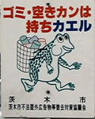
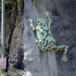

カエルがせっせとゴミ拾い！

【大阪発=どっぷりカエラーのｋｅｒｏｙａｎ同志記者】茨木市のあるバス通りに立っている看板。こんなに一所懸命働くカエル君を見てはゴミを持って帰らずにはいられません・・・皆様、ポイ捨てはやめましょうね。
巨大壁のぼりカエルも発見！

さらに、和歌山県の高野山に（大阪方面から）行く途中にある、確か”かじか荘”という休憩所にいたカエル君です。上の画像を見るとよく分かると思いますが かなりデカイです。左端にあるのが電柱です。
【全国かえる奉賛会】すごいぞー。からだがぐにゃんぐにゃんしているカエルが、重いかごを背負って、せっせとごみを集めているとは！みんな、カエル君も大変なので、ごみを散らかさないようにしよう。
また、巨大壁のぼりカエルが、半端なでかさぢゃないな、いったい誰が何のためにカエルをおいたのでしょうか。壁を見るとカエルを置きたくなるのは、まー人間としてだれしも当然の気持ちだと思うけどね！
旭川がま記念館が移転開業！
がま記念館新築オープンは１０月２５日！
【北海道発kero+suta同志記者】私は「kero+suta」という、かえるの素材屋をやっておりますおれんぢと言います。
いつもかえる新聞楽しく拝見させていただいております。ところで、大王さまも行ったことがあるかと思いますが北海道旭川のがま記念館がリニューアルOPENするそうですｖもう知ってるでしょうか・・・？
実は、私は地元でしてつい最近がま記念館の前を通ったらすっかりあの建物は無！！になっていて寂しく思っていましたぁ。それで、社長さんが開いていらっしゃる時代屋さんへ行って聞いてみたんです。
ちょうど社長さんがいらっしゃって!!がま記念館は移転＆大きさも倍くらいになってかえるたちも全コレクション展示するそうですｖｖ10月２５日OPEN。ということなのでさっそく友達と行って来ようと思ってます。写真など撮れるようであればまた報告しますねぇ。
【全国かえる奉賛会】
電話０１６６（３２）８８４０『喫茶がま記念館』
豪州のカエル虐待ゴルフ！
【豪州発のだえる同志記者】周囲に理解者のいないカエラーで、常々寂しい思いをしておりましたが、こちらの新聞を発見して、さっそく仲間に入れていただこうとメールさしあげる次第です。さて、カエルの悲劇をレポートします。私、日本語教師をしているのですが、先日、学生の作文を添削してましたところ、香港出身オーストラリア国籍の男の子が「オーストラリアでよくカエルゴルフをした」と書いているではありませんか。
それはなんと「ゴルフクラブでヒキガエルを打ち飛ばす」という遊びで、その「感触がよい」のだそうです。オーストラリアではカエルはこんなギャクタイを受けているのです！この悲劇をぜひ知っていただきたくて筆をとりました。
【全国かえる奉賛会】ぐおー狂牛病騒ぎの中、牛肉を売りまくっている豪州で、こんな習慣があったなんてえ。カエルゴルフをやった人は、地獄に落ちる時に、巨大カエルに丸のみされて、胃の中でゆるやかに溶けてゆくことであろうぞー。いまこそ捕鯨国ノルウエーとニッポンは、豪州に対して厳重に抗議してほしい。牛肉不買運動もんだなー。
モローストラップ８期分譲中！
 【ケロ天市場】けろテン市場では、モローのストラップ『第８期分譲開始』だああああ！！題して『夏の思い出コレクション』。今回、大王がケロ天のページ作った直後に、上海旅行にでかけてしまい、ケロ天市場の広報を新聞でするのが遅れたあああ。ページにたまたま辿り着いたラッキーな人は、先にゲットしているけど、まだ今からでも遅くないぞーっ！！モローストラップ作者の『弟子りょーこさん』のミニグラビア付きです。注文はお早めに！
【ケロ天市場】けろテン市場では、モローのストラップ『第８期分譲開始』だああああ！！題して『夏の思い出コレクション』。今回、大王がケロ天のページ作った直後に、上海旅行にでかけてしまい、ケロ天市場の広報を新聞でするのが遅れたあああ。ページにたまたま辿り着いたラッキーな人は、先にゲットしているけど、まだ今からでも遅くないぞーっ！！モローストラップ作者の『弟子りょーこさん』のミニグラビア付きです。注文はお早めに！

八幡中央高校『童心にカエル』に感状と記念品！
【福岡発げこげこ大王直筆】平成１３年９月２日号で紹介した『砂浜にカエル造型物！』の作品を作った八幡中央高校芸術コース「童心にカエル」に対して、げこげこ大王７世と、全国カエル奉賛会は、『感状』を発行して、このほど送付した。記念品も、製作にあたった指導教官と生徒１５人全員に対して記念品を贈呈したので、校長室に飾ってくれー。そして来年もぜひ、カエルで勝負してほしいぞ。妻出した茶わんに「カエル」 離婚決定 ！
【カエル掲示板情報】非カエル系情報媒体のCNNは、アフリカの離婚の話題をカエル入りで伝えていた。なんというか。ザンビアで『妻から出されたお茶のカップの中に「カエル」が入っていたとして離婚を求めた夫の訴えを認める判決を下した』そうなのだ。 『カエルの生死や、茶わんに入れられた経緯などは不明』らしいぞ。『２８歳の夫はこのカエル事件の後、妻に愛想が尽き、他の女性に走った』 という。 日本だったら、茶わんにカエルが入っていたら『離れていた気持ちがカエル』として、離婚を求めたりしないだろうに。ところ変わればカエルの意味も違ってくるのかな！しかし、カエルねたって国際ニュースになるんだなー。びっくり。ヤドクガエル目撃〜！
【千葉発ケロリカ同志記者】船橋ららぽ〜とに潜入したところ、「グレートアマゾン展」なる催しが行われていました。入場料600円也を払って入ってみると、まさにそこはアマゾンの密林だった！！(←かなり大袈裟)入り口のコンゴウインコに脅され、フロアをのそりのそりと歩き回るイグアナの頭を撫で、ナマケモノ、ピラーニャなどの珍しい生き物を見物。すると、その中になんとジャングルに生息するかえる様のお姿が！
はるばる南米から出張なさっていたかえる様は、ヤドクガエル・アカメアマガエル・バジェットガエル・ベルツノガエル・ピパ、の御一行。中でもヤドクガエルの美しさには惚れぼれいたしました。あれはコバルトヤドクガエルでしょうか。宝石のように輝く青い小さなかえる様。思わず連れて帰りたくなりましたが、触ったらやっぱり毒が回って死んじゃうのかな。
ナマのかえる様を見た後は、行きつけの雑貨屋“STUDY ROOM”へ。ここには、スミソニアン自然史博物館のかえるグッズがあるのだ。今回はホログラムかえる様を身請けさせていただきました。
ちなみに、アマゾンのかえる様は11月４日まで御滞在とのことです。
| ||||||||||||||||||||||||||||||
TEXTかえる新聞！【全国かえる奉賛会】かえる新聞のテキストバージョン。ページに来ることを忘れた人には都合がいい。内容は、新聞の更新よりも遅れるかもしれない。
|
投稿採用者に武功カエル徽章を授与！